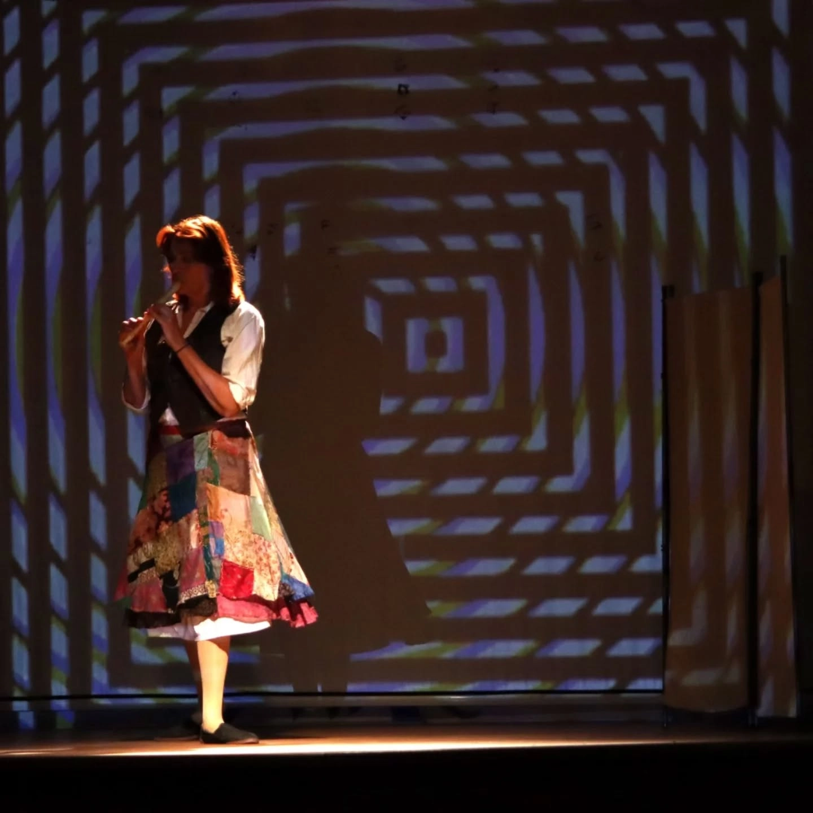

Virginia Woolf nos invita a
acompañarla durante su último día a través de sus
vivencias para conocer su mundo literario y su
desventura vital, narrada en primera persona, donde
descubriremos pasajes que pocas veces se nos
mostraron en otras representaciones de tan icónico
personaje.
Londres bajo las
bombas nazis,
su relación con
su marido, con
su familia, sus
amantes, la alta
sociedad británica,
la flor y nata de
la literatura de
la época... son
elementos que modelaron el carácter de nuestra
protagonista, que, debido a su extrema sensibilidad
y acuciada por el dolor, la desesperanza y la soledad,
no encontró otra salida que recurrir a la más terrible
decisión.
La costura Teatro
Somos una compañía de teatro radicada en Córdoba y tenemos muy
presente la necesidad de poner la cultura al alcance de todxs lxs espectadorxs.
Conscientes de la potentísima herramienta de cambio social que supone
el teatro, nuestras obras siempre están marcadas por una defensa
de valores como la libertad, la lucha por la igualdad de género, el respeto
del medio ambiente, así como otros temas de índole social, en una continua búsqueda
por que nuestrxs espectadorxs disfruten de una experiencia única y emocionante en el teatro.

Actualidad
Córdoba, 4 de enero de 2025

¡Hemos arrancado 2025 con muchísima energía!
Ayer nos desplazamos al precioso Valle de los Pedroches, en concreto al municipio de Villaralto,
para poner sobre las tablas Rima Discordante.
En una fecha un tanto extraña, plagada de compromisos familiares,
el público llevó en volandas a Dora, Narciso y Rafa en sus aventuras (y sus desventuras).
Aunque es la primera vez que visitamos
este pueblo, sus gentes nos han tratado con un cariño impresionante. Ya estamos deseando volver.
El propio Ayuntamiento de la localidad se hace eco
en sus redes sociales
de nuestro paso por su escenario.
As√≠ da gusto empezar el a√±o 🤩
La Costura
Córdoba, 4 de enero de 2025
¡Hemos arrancado 2025 con muchísima energía!
Ayer nos desplazamos al precioso Valle de los Pedroches, en concreto al municipio de Villaralto,
para poner sobre las tablas Rima Discordante.
En una fecha un tanto extraña, plagada de compromisos familiares,
el público llevó en volandas a Dora, Narciso y Rafa en sus aventuras (y sus desventuras).
Aunque es la primera vez que visitamos
este pueblo, sus gentes nos han tratado con un cariño impresionante. Ya estamos deseando volver.
El propio Ayuntamiento de la localidad se hace eco
en sus redes sociales
de nuestro paso por su escenario.
As√≠ da gusto empezar el a√±o 🤩
La Costura
Nuestros espectáculos
Quiénes somos
Eduardo Clavería
Licenciado en Derecho en la Universidad de Córdoba. Se ocupa como autor y editor de obras jurídicas online. Comienza su formación actoral con Raquel Toledo, primero en la universidad, luego en sus Talleres de Teatro Laboratorio. Continúa completando su formación, hasta el día de hoy, con cursos y talleres, tanto de cine como de teatro. Comienza su carrera profesional artística en mundo teatral, donde colabora con diversas compañías como Zerocontrés Teatro y Squizo Teatro. Cuenta también con una gran experiencia en el ámbito del turismo teatralizado. En el medio cinematográfico se ha desenvuelto principalmente como actor, participando en más de 20 cortometrajes, pero también como guionista y director. Ha participado en proyectos audiovisuales de productoras como Netflix o Travel Channel U.K.
María José Lucena
Recibió formación actoral en la escuela de teatro Avanti y ActúaCórdoba, ha participado en certámenes de teatro con los grupos Triteatras, Morfeo y Squizo Teatro. También ha ejercido la escritura creativa, guion y dirección de cine, obteniendo varios premios y nominaciones a mejor actriz, como en Secretos de Belleza, que fue premiado en el III Festival de EnmujecerFest de 2020 como mejor cortometraje. Jefa de producción de la miniserie El Oro de Melchor. Ha participado en el programa Tierra de Mujeres de la Diputación de Córdoba, así como varios personajes en las famosas Jornadas Medievales de recreación histórica del Castillo de Almodóvar del Río. Actualmente estudia el Grado de Interpretación Textual en la ESAD de Córdoba. Colabora en proyectos audiovisuales de ámbito local. Además de su faceta como actriz, escribe guiones, obras de teatro, monólogos y relatos.
Silvia Jurado
Licenciada en Biología por la Universidad de Córdoba, su inquietud creativa parte del mundo de la fotografía, habiendo realizado varios proyectos. Desde muy joven ha estado vinculada al teatro, cursando, entre otros, estudios en Dirección de Arte en la escuela Actúa Córdoba donde ha participado en varios trabajos audiovisuales tales como Teléfonos de rueda y Papá, un proyecto a caballo entre Actúa Córdoba y Diggingdog Studios. Entre sus últimos trabajos se encuentran los cortometrajes Al amparo de la noche y Al final del arcoíris, todos actualmente en post producción. En la miniserie El Oro del Melchor ha sido la directora de arte. En el ámbito teatral ha llevado a cabo la puesta en escena en las obras Las Islas y ha sido la directora de arte de la compañía Kinema Teatro, llevando a cabo la puesta en escena de múltiples obras.
Nolasco Díaz-Alcaide
Licenciado en Historia del Arte en la Universidad de Córdoba. Técnico Superior en Realización de Audiovisuales y Espectáculos, compagina la docencia en diversas materias cinematográficas con su labor de guionista y director, habiendo escrito y dirigido cinco cortometrajes y el episodio piloto de la miniserie El Oro de Melchor. Director de fotografía en cine, cortometrajes, publicidad y videoclips, tanto de producción propia, como para clientes externos como DiggingDog Studios, Cortijo Producciones o ArteDirecto. También ha participado en el equipo de fotografía de la productora Fresco Films para Netflix y ha dirigido la fotografía de la película Intersex. Redactor y editor en la publicación El Salto y en El EnTendedero TV. A su vez, colabora como diseñador de iluminación y técnico de sonido en varias compañías teatrales.
Contacto
üì¨Puedes contactar con nosotrxs en lacosturateatro@gmail.com
☎️Si lo prefieres, tambi√©n te atenderemos en el tel√©fono 601 160 658
Te animamos a que nos sigas en nuestras redes para no perderte nuestras aventuras y disfrutar de contenido extra.